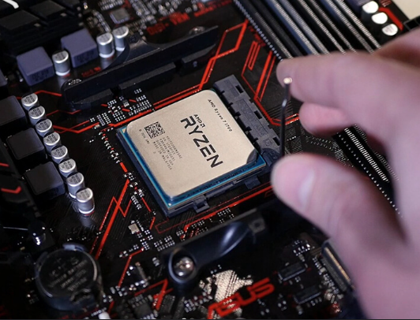
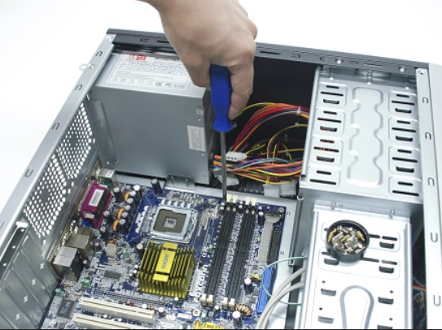
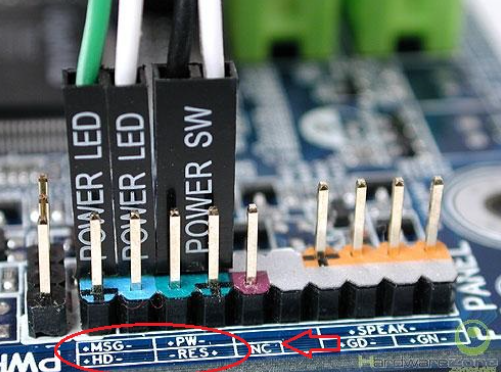
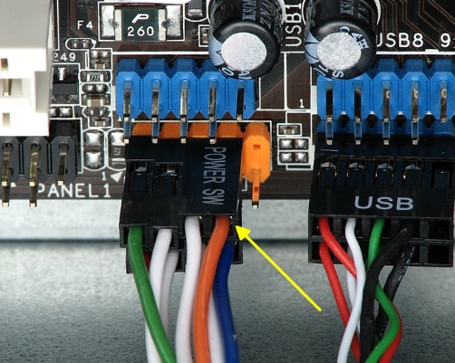
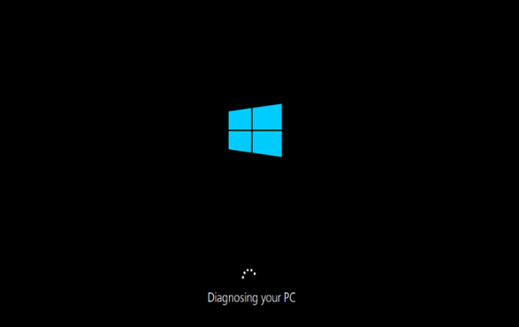

Lắp ráp một chiếc PC không phải là một công việc quá phức tạp, nhưng nếu bạn là người mới, việc này có thể khiến bạn cảm thấy lo lắng. Bài viết này sẽ hướng dẫn bạn từng bước một cách chi tiết để bạn có thể tự tin xây dựng chiếc PC của riêng mình.
1. Chuẩn Bị Dụng Cụ
Trước khi bắt đầu, bạn cần chuẩn bị một số dụng cụ cơ bản như:
- Vít đầu chữ thập (để vặn các ốc vít)
- Các linh kiện cần thiết: Mainboard, CPU, RAM, ổ cứng, nguồn, vỏ máy...
- Dây cáp và dây nguồn
2. Lắp CPU và RAM vào Mainboard
Bước đầu tiên là lắp CPU và RAM vào mainboard. Đảm bảo rằng bạn lắp đúng hướng của các chân cắm CPU vào socket của mainboard. Sau đó, cẩn thận gắn RAM vào khe cắm trên mainboard.
3. Cài Đặt Mainboard vào Vỏ Máy
Sau khi cài đặt CPU và RAM, bạn sẽ lắp mainboard vào trong vỏ máy. Đảm bảo rằng mainboard được cố định chắc chắn và không bị lệch.
4. Cắm Các Dây Nguồn và Ổ Cứng
Tiếp theo, bạn cần cắm các dây nguồn vào mainboard và các linh kiện như ổ cứng, quạt tản nhiệt. Đảm bảo rằng các dây được cắm đúng vị trí và không bị sai.
5. Kiểm Tra Lại Các Kết Nối
Trước khi bật máy lên, hãy kiểm tra lại tất cả các kết nối dây, đảm bảo rằng mọi thứ đã được kết nối đúng cách. Kiểm tra nguồn điện và tất cả các cổng kết nối.
6. Khởi Động PC
Sau khi kiểm tra mọi thứ, bạn có thể bật nguồn máy tính và kiểm tra xem mọi linh kiện đã hoạt động bình thường chưa.
